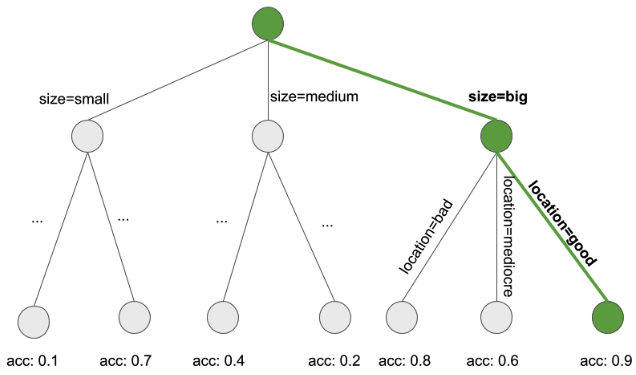

En cours de traduction.
5.5 - Règles de décision
Une règle de décision est une simple instruction SI-ALORS composée d’une condition (également appelée antécédent) et d’une prédiction. Par exemple : SI il pleut aujourd’hui ET si c’est avril (condition), ALORS il pleuvra demain (prédiction). Une seule règle de décision ou une combinaison de plusieurs règles peuvent être utilisées pour faire des prédictions.
Les règles de décision suivent une structure générale : SI les conditions sont remplies ALORS faites une certaine prédiction. Les règles de décision sont probablement les modèles de prédiction les plus interprétables. Leur structure SI-ALORS ressemble sémantiquement au langage naturel et à notre façon de penser, à condition que la condition soit construite à partir de caractéristiques intelligibles, la longueur de la condition soit courte (petit nombre de paires caracteristique = valeur combinées avec un ET) et il n’y ait pas trop de règles. En programmation, il est très naturel d’écrire des règles SI-ALORS. La nouveauté de l’apprentissage automatique est que les règles de décision sont apprises via un algorithme.
Imaginez que vous utilisiez un algorithme pour apprendre des règles de décision permettant de prédire la valeur d’une maison ( basse, moyenne ou elevee). Une règle de décision apprise par ce modèle pourrait être la suivante : si la surface d’une maison mesure plus de 100 mètres carrés et possède un jardin, alors sa valeur est élevée. Plus formellement : SI surface > 100 AND jardin = 1 ALORS valeur = elevee.
Décomposons la règle de décision :
surface > 100est la première condition de la partie SI.jardin = 1est la deuxième condition de la partie SI.- Les deux conditions sont reliées par un « ET » pour créer une nouvelle condition. Les deux doivent être vrais pour que la règle s’applique.
- Le résultat prédit (PUIS-partie) est
valeur = elevee.
Une règle de décision utilise au moins une feature=valueinstruction dans la condition, sans limite supérieure quant au nombre d’instructions supplémentaires pouvant être ajoutées avec un « ET ». Une exception est la règle par défaut qui n’a pas de partie SI explicite et qui s’applique lorsqu’aucune autre règle ne s’applique, mais nous en parlerons plus tard.
L’utilité d’une règle de décision se résume généralement en deux chiffres : support et précision.
Support ou couverture d’une règle : Le pourcentage d’instances auxquelles s’applique la condition d’une règle est appelé le support. Prenons par exemple la règle surface = grande ET location = bonne ALORS valeur = elevee de prédiction de la valeur des maisons. Supposons que 100 maisons sur 1 000 soient grandes et bien situées, alors le soutien à la règle est de 10%. La prédiction (PUIS-partie) n’est pas importante pour le calcul du support.
Précision ou confiance d’une règle : l’exactitude d’une règle est une mesure de la précision avec laquelle elle prédit la classe correcte pour les instances auxquelles la condition de la règle s’applique. Par exemple : disons que sur les 100 maisons où la règle surface = grande ET location = bonne ALORS valeur = elevee s’applique, 85 ont valeur = elevee, 14 ont valeur = moyenne et 1 a valeur = basse, alors l’exactitude de la règle est de 85%.
Il existe généralement un compromis entre précision et support : en ajoutant plus de fonctionnalités à la condition, nous pouvons obtenir une plus grande précision, mais perdre le support.
Pour créer un bon classificateur permettant de prédire la valeur d’une maison, vous devrez peut-être apprendre non seulement une règle, mais peut-être 10 ou 20. Les choses peuvent alors devenir plus compliquées et vous pouvez rencontrer l’un des problèmes suivants :
- Les règles peuvent se chevaucher : que se passe-t-il si je veux prédire la valeur d’une maison et que deux règles ou plus s’appliquent et qu’elles me donnent des prédictions contradictoires ?
- Aucune règle ne s’applique : que se passe-t-il si je souhaite prédire la valeur d’une maison et qu’aucune des règles ne s’applique ?
Il existe deux stratégies principales pour combiner plusieurs règles : les listes de décisions (ordonnées) et les ensembles de décisions (non ordonnés). Les deux stratégies impliquent des solutions différentes au problème du chevauchement des règles.
Une liste de décisions introduit un ordre dans les règles de décision. Si la condition de la première règle est vraie pour une instance, nous utilisons la prédiction de la première règle. Sinon, nous passons à la règle suivante et vérifions si elle s’applique et ainsi de suite. Les listes de décisions résolvent le problème des règles qui se chevauchent en renvoyant uniquement la prédiction de la première règle de la liste qui s’applique.
Un ensemble de décisions ressemble à une démocratie de règles, sauf que certaines règles peuvent avoir un pouvoir de vote plus élevé. Dans un ensemble, soit les règles s’excluent mutuellement, soit il existe une stratégie pour résoudre les conflits, comme le vote majoritaire, qui peut être pondérée par la précision des règles individuelles ou d’autres mesures de qualité. L’interprétabilité souffre potentiellement lorsque plusieurs règles s’appliquent.
Les listes et les ensembles de décisions peuvent souffrir du problème selon lequel aucune règle ne s’applique à une instance. Ce problème peut être résolu en introduisant une règle par défaut. La règle par défaut est la règle qui s’applique lorsqu’aucune autre règle ne s’applique. La prédiction de la règle par défaut constitue souvent la classe la plus fréquente de points de données qui ne sont pas couverts par d’autres règles. Si un ensemble ou une liste de règles couvre tout l’espace des fonctionnalités, nous le qualifions d’exhaustif. En ajoutant une règle par défaut, un ensemble ou une liste devient automatiquement exhaustif.
Il existe de nombreuses façons d’apprendre des règles à partir de données et ce livre est loin de toutes les couvrir. Ce chapitre vous en montre trois. Les algorithmes sont choisis pour couvrir un large éventail d’idées générales d’apprentissage des règles, ils représentent donc tous les trois des approches très différentes.
- OneR apprend les règles à partir d’une seule fonctionnalité. OneR se caractérise par sa simplicité, son interprétabilité et son utilisation comme benchmark.
- La couverture séquentielle est une procédure générale qui apprend de manière itérative les règles et supprime les points de données couverts par la nouvelle règle. Cette procédure est utilisée par de nombreux algorithmes d’apprentissage de règles.
- Les listes de règles bayésiennes combinent des modèles fréquents pré-exploités dans une liste de décisions utilisant des statistiques bayésiennes. L’utilisation de modèles pré-exploités est une approche courante utilisée par de nombreux algorithmes d’apprentissage de règles.
Commençons par l’approche la plus simple : utiliser la meilleure fonctionnalité pour apprendre les règles.
5.5.1 - Learn Rules from a Single Feature (OneR)
L’algorithme OneR proposé par Holte (1993)1 est l’un des algorithmes d’induction de règles les plus simples. Parmi toutes les fonctionnalités, OneR sélectionne celle qui contient le plus d’informations sur le résultat qui l’intéresse et crée des règles de décision à partir de cette fonctionnalité.
Malgré son nom OneR, qui signifie « One Rule », l’algorithme génère plus d’une règle : il s’agit en fait d’une règle par valeur de caractéristique unique de la meilleure fonctionnalité sélectionnée. Un meilleur nom serait OneFeatureRules.
L’algorithme est simple et rapide :
- Discrétisez les fonctionnalités continues en choisissant des intervalles appropriés.
- Pour chaque fonctionnalité :
- Créez un tableau croisé entre les valeurs des caractéristiques et le résultat (catégorique).
- Pour chaque valeur de la fonctionnalité, créez une règle qui prédit la classe la plus fréquente des instances qui ont cette valeur de fonctionnalité particulière (peut être lue à partir du tableau croisé).
- Calculez l’erreur totale des règles pour la fonctionnalité.
- Sélectionnez la fonctionnalité avec la plus petite erreur totale.
OneR couvre toujours toutes les instances de l’ensemble de données, car il utilise tous les niveaux de l’entité sélectionnée. Les valeurs manquantes peuvent être soit traitées comme une valeur de caractéristique supplémentaire, soit imputées au préalable.
Un modèle OneR est un arbre de décision avec une seule division. La répartition n’est pas nécessairement binaire comme dans CART, mais dépend du nombre de valeurs de caractéristiques uniques.
Regardons un exemple de la façon dont la meilleure fonctionnalité est choisie par OneR. Le tableau suivant présente un ensemble de données artificielles sur les maisons avec des informations sur leur valeur, leur emplacement, leur taille et si les animaux sont autorisés. Nous souhaitons apprendre un modèle simple pour prédire la valeur d’une maison.
OneR crée les tableaux croisés entre chaque fonctionnalité et le résultat :
Pour chaque fonctionnalité, nous parcourons le tableau ligne par ligne : chaque valeur de fonctionnalité est la partie SI d’une règle ; la classe la plus courante pour les instances avec cette valeur de caractéristique est la prédiction, la partie ALORS de la règle. Par exemple, la fonction de taille avec les niveaux basse, moyenne et elevee donne trois règles. Pour chaque fonctionnalité, nous calculons le taux d’erreur total des règles générées, qui est la somme des erreurs. La fonctionnalité de localisation a les valeurs possibles mauvaise et bonne. La valeur la plus fréquente pour les maisons situées dans de mauvais emplacements est basse et lorsque nous l’utilisons comme prédiction, nous faisons deux erreurs, car deux maisons ont une valeur moyenne. La valeur prédite des maisons bien situées est égale à elevee et encore une fois, nous commettons deux erreurs, car deux maisons ont une valeur moyenne. L’erreur que nous faisons en utilisant la fonction de localisation est de 4/10, pour la fonction de taille, elle est de 3/10 et pour la fonction d’animal de compagnie, elle est de 4/10. La fonctionnalité de taille produit les règles avec l’erreur la plus faible et sera utilisée pour le modèle OneR final :
SI size = petite ALORS value = basse
SI size = moyenne ALORS value = moyenne
SI size = grance ALORS value = elevee
OneR préfère les fonctionnalités avec de nombreux niveaux possibles, car ces fonctionnalités peuvent plus facilement suradapter la cible. Imaginez un ensemble de données qui ne contient que du bruit et aucun signal, ce qui signifie que toutes les caractéristiques prennent des valeurs aléatoires et n’ont aucune valeur prédictive pour la cible. Certaines fonctionnalités ont plus de niveaux que d’autres. Les fonctionnalités avec plus de niveaux peuvent désormais être surajustées plus facilement. Une fonctionnalité qui a un niveau distinct pour chaque instance des données prédirait parfaitement l’ensemble de l’ensemble de données d’entraînement. Une solution serait de diviser les données en ensembles de formation et de validation, d’apprendre les règles sur les données de formation et d’évaluer l’erreur totale de choix de la fonctionnalité sur l’ensemble de validation.
Les égalités sont un autre problème, c’est-à-dire lorsque deux caractéristiques aboutissent à la même erreur totale. OneR résout les égalités en prenant soit la première caractéristique avec l’erreur la plus faible, soit celle avec la valeur p la plus basse d’un test du chi carré.
Exemple
Essayons OneR avec des données réelles. Nous utilisons la tâche de classification du cancer du col de l’utérus pour tester l’algorithme OneR. Toutes les caractéristiques d’entrée continue ont été discrétisées en leurs 5 quantiles. Les règles suivantes sont créées :
La fonctionnalité âge a été choisie par OneR comme la meilleure fonctionnalité prédictive. Puisque le cancer est rare, pour chaque règle, la classe majoritaire et donc l’étiquette prédite sont toujours en bonne santé, ce qui est plutôt inutile. Cela n’a pas de sens d’utiliser la prédiction d’étiquette dans ce cas déséquilibré. Le tableau croisé entre les intervalles « Âge » et Cancer/En bonne santé ainsi que le pourcentage de femmes atteintes de cancer est plus informatif :
Mais avant de commencer à interpréter quoi que ce soit : étant donné que la prédiction pour chaque fonctionnalité et chaque valeur est saine, le taux d’erreur total est le même pour toutes les fonctionnalités. Les liens dans l’erreur totale sont, par défaut, résolus en utilisant la première fonctionnalité parmi celles avec les taux d’erreur les plus bas (ici, toutes les fonctionnalités ont 55/858), qui se trouve être la fonctionnalité Âge.
OneR ne prend pas en charge les tâches de régression. Mais nous pouvons transformer une tâche de régression en tâche de classification en découpant le résultat continu en intervalles. Nous utilisons cette astuce pour prédire le nombre de vélos loués avec OneR en découpant le nombre de vélos en quatre quartiles (0-25%, 25-50%, 50-75% et 75-100%). Le tableau suivant montre la fonctionnalité sélectionnée après l’ajustement du modèle OneR :
La fonctionnalité sélectionnée est le mois. La fonctionnalité mensuelle a (surprise !) 12 niveaux de fonctionnalités, ce qui est plus que la plupart des autres fonctionnalités. Il existe donc un risque de surapprentissage. Du côté le plus optimiste : la fonction mensuelle peut gérer la tendance saisonnière (par exemple moins de vélos loués en hiver) et les prévisions semblent raisonnables.
Nous passons maintenant du simple algorithme OneR à une procédure plus complexe utilisant des règles avec des conditions plus complexes composées de plusieurs fonctionnalités : Sequential Covering.
5.5.2 - Sequential Covering
La couverture séquentielle est une procédure générale qui apprend de manière répétée une seule règle pour créer une liste de décisions (ou un ensemble) qui couvre l’intégralité de l’ensemble de données, règle par règle. De nombreux algorithmes d’apprentissage de règles sont des variantes de l’algorithme de couverture séquentielle. Ce chapitre présente la recette principale et utilise RIPPER, une variante de l’algorithme de couverture séquentielle pour les exemples.
L’idée est simple : tout d’abord, trouvez une bonne règle qui s’applique à certains points de données. Supprimez tous les points de données couverts par la règle. Un point de données est couvert lorsque les conditions s’appliquent, que les points soient classés correctement ou non. Répétez l’apprentissage des règles et la suppression des points couverts avec les points restants jusqu’à ce qu’il ne reste plus de points ou qu’une autre condition d’arrêt soit remplie. Le résultat est une liste de décisions. Cette approche d’apprentissage répété des règles et de suppression des points de données couverts est appelée « séparer et conquérir ».
Supposons que nous disposions déjà d’un algorithme capable de créer une règle unique couvrant une partie des données. L’algorithme de couverture séquentielle pour deux classes (une positive, une négative) fonctionne comme ceci :
- Commencez avec une liste vide de règles (rlist).
- Apprenez une règle r.
- Bien que la liste des règles soit inférieure à un certain seuil de qualité (ou que les exemples positifs ne soient pas encore couverts) :
- Ajoutez la règle r à rlist.
- Supprimez tous les points de données couverts par la règle r.
- Apprenez une autre règle sur les données restantes.
- Renvoyez la liste de décisions.
Par exemple : nous avons une tâche et un ensemble de données pour prédire les valeurs des maisons en fonction de leur taille, de leur emplacement et si les animaux sont autorisés. Nous apprenons la première règle, qui s’avère être : Si size = biget location = good, alors value = high. Ensuite, nous supprimons de l’ensemble de données toutes les grandes maisons bien situées. Avec les données restantes, nous apprenons la règle suivante. Peut-être : si location = good, alors value = medium. Notez que cette règle est apprise sur des données sans grandes maisons bien situées, ne laissant que des maisons moyennes et petites bien situées.
Pour les paramètres multi-classes, l’approche doit être modifiée. Premièrement, les classes sont classées par prévalence croissante. L’algorithme de couverture séquentielle commence par la classe la moins commune, apprend une règle pour celle-ci, supprime toutes les instances couvertes, puis passe à la deuxième classe la moins commune et ainsi de suite. La classe actuelle est toujours traitée comme la classe positive et toutes les classes ayant une prévalence plus élevée sont regroupées dans la classe négative. La dernière classe est la règle par défaut. C’est ce qu’on appelle également la stratégie du un contre tous en matière de classification.
Comment apprend-on une seule règle ? L’algorithme OneR serait inutile ici, car il couvrirait toujours tout l’espace des fonctionnalités. Mais il existe bien d’autres possibilités. Une possibilité consiste à apprendre une seule règle à partir d’un arbre de décision avec recherche de faisceau :
- Apprenez un arbre de décision (avec CART ou un autre algorithme d’apprentissage d’arbre).
- Commencez par le nœud racine et sélectionnez de manière récursive le nœud le plus pur (par exemple avec le taux d’erreurs de classification le plus bas).
- La classe majoritaire du nœud terminal est utilisée comme prédiction de règle ; le chemin menant à ce nœud est utilisé comme condition de règle.
La figure suivante illustre la recherche de poutres dans un arbre :

location = good et size = big, alors value=high.L’apprentissage d’une seule règle est un problème de recherche, où l’espace de recherche est l’espace de toutes les règles possibles. Le but de la recherche est de trouver la meilleure règle selon certains critères. Il existe de nombreuses stratégies de recherche différentes : recherche par ascension, recherche par faisceau, recherche exhaustive, recherche par le meilleur premier, recherche ordonnée, recherche stochastique, recherche descendante, recherche ascendante, …
RIPPER (Repeated Incremental Pruning to Produce Error Reduction) de Cohen (1995)2 est une variante de l’algorithme Sequential Covering. RIPPER est un peu plus sophistiqué et utilise une phase de post-traitement (élagage des règles) pour optimiser la liste (ou l’ensemble) de décisions. RIPPER peut fonctionner en mode ordonné ou non et générer soit une liste de décisions, soit un ensemble de décisions.
Exemples
Nous utiliserons RIPPER pour les exemples.
L’algorithme RIPPER ne trouve aucune règle dans la tâche de classification du cancer du col de l’utérus.
Lorsque nous utilisons RIPPER sur la tâche de régression pour prédire le nombre de vélos, certaines règles sont trouvées. Puisque RIPPER ne fonctionne que pour la classification, le décompte des vélos doit être transformé en un résultat catégorique. J’y suis parvenu en réduisant le nombre de vélos en quartiles. Par exemple (4548, 5956) est l’intervalle couvrant le nombre de vélos prévu entre 4548 et 5956. Le tableau suivant montre la liste de décision des règles apprises.
L’interprétation est simple : si les conditions sont réunies, nous prédisons l’intervalle sur la droite pour le nombre de vélos. La dernière règle est la règle par défaut qui s’applique lorsqu’aucune des autres règles ne s’applique à une instance. Pour prédire une nouvelle instance, commencez par le haut de la liste et vérifiez si une règle s’applique. Lorsqu’une condition correspond, le côté droit de la règle correspond à la prédiction pour cette instance. La règle par défaut garantit qu’il y a toujours une prédiction.
5.5.3 - Bayesian Rule Lists
Dans cette section, je vais vous montrer une autre approche pour apprendre une liste de décisions, qui suit cette recette approximative :
- Pré-exploitez les modèles fréquents à partir des données qui peuvent être utilisés comme conditions pour les règles de décision.
- Apprenez une liste de décisions à partir d’une sélection de règles prédéfinies.
Une approche spécifique utilisant cette recette est appelée Bayesian Rule Lists (Letham et al., 2015)3 ou BRL en abrégé. BRL utilise les statistiques bayésiennes pour apprendre des listes de décisions à partir de modèles fréquents pré-exploités avec l’algorithme FP-tree (Borgelt 2005)4.
Mais commençons lentement par la première étape du BRL.
Pré-exploration de modèles fréquents
Un modèle fréquent est la (co-)occurrence fréquente de valeurs de caractéristiques. En tant qu’étape de prétraitement pour l’algorithme BRL, nous utilisons les fonctionnalités (nous n’avons pas besoin du résultat cible dans cette étape) et en extrayons des modèles fréquents. Un modèle peut être une valeur de caractéristique unique telle que size=mediumou une combinaison de valeurs de caractéristiques telle que size = medium ET location = bad.
La fréquence d’un motif est mesurée avec son support dans l’ensemble de données :
\[Support(x_j=A)=\frac{1}n{}\sum_{i=1}^nI(x^{(i)}_{j}=A)\]
où \(A\) est la valeur de la caractéristique, \(n\) le nombre de points de données dans l’ensemble de données et \(I\) la fonction indicatrice qui renvoie 1 si la caractéristique \(X_j\) de l’instance \(i\) a le niveau \(A\) sinon 0. Dans un ensemble de données de valeurs de maison, si 20% des maisons n’ont pas de balcon et 80% en ont un ou plusieurs, alors la prise en charge du modèle balcony = 0est de 20%. La prise en charge peut également être mesurée pour des combinaisons de valeurs de fonctionnalités, par exemple pour balcony = 0 ET pets = allowed.
Il existe de nombreux algorithmes pour trouver des modèles aussi fréquents, par exemple Apriori ou FP-Growth. Ce que vous utilisez n’a pas beaucoup d’importance, seule la vitesse à laquelle les motifs sont trouvés est différente, mais les motifs résultants sont toujours les mêmes.
Je vais vous donner une idée générale du fonctionnement de l’algorithme Apriori pour trouver des modèles fréquents. En fait, l’algorithme Apriori se compose de deux parties, la première partie trouvant des modèles fréquents et la seconde partie construisant des règles d’association à partir d’elles. Pour l’algorithme BRL, nous nous intéressons uniquement aux modèles fréquents générés dans la première partie d’Apriori.
Dans la première étape, l’algorithme Apriori commence avec toutes les valeurs de caractéristiques qui ont un support supérieur au support minimum défini par l’utilisateur. Si l’utilisateur dit que le support minimum devrait être de 10% et que seulement 5% des maisons en ont size = big, nous supprimerions cette valeur de fonctionnalité et conserverions uniquement size = medium et size = smallen tant que modèles. Cela ne signifie pas que les maisons sont supprimées des données, cela signifie simplement qu’elles size = big ne sont pas renvoyées selon un modèle fréquent. Basé sur des modèles fréquents avec une seule valeur de caractéristique, l’algorithme Apriori tente de manière itérative de trouver des combinaisons de valeurs de caractéristiques d’ordre de plus en plus élevé. Les modèles sont construits en combinant feature=value des instructions avec un ET logique, par exemple size = medium ET location = bad. Les modèles générés avec un support inférieur au support minimum sont supprimés. Au final, nous avons tous les schémas fréquents. Tout sous-ensemble de clauses d’un modèle fréquent est à nouveau fréquent, ce que l’on appelle la propriété Apriori. Cela a du sens intuitivement : en supprimant une condition d’un modèle, le modèle réduit ne peut couvrir que plus ou le même nombre de points de données, mais pas moins. Par exemple, si 20% des maisons le sont size = medium ET location = good, alors le soutien aux maisons qui le sont seulement size = medium est de 20% ou plus. La propriété Apriori est utilisée pour réduire le nombre de motifs à inspecter. Ce n’est que dans le cas de modèles fréquents que nous devons vérifier les modèles d’ordre supérieur.
Nous en avons maintenant terminé avec les conditions préalables à l’exploration pour l’algorithme de liste de règles bayésiennes. Mais avant de passer à la deuxième étape du BRL, je voudrais faire allusion à une autre manière d’apprendre des règles basée sur des modèles pré-exploités. D’autres approches suggèrent d’inclure le résultat d’intérêt dans le processus fréquent d’exploration de modèles et également d’exécuter la deuxième partie de l’algorithme Apriori qui construit les règles SI-ALORS. Puisque l’algorithme n’est pas supervisé, la partie ALORS contient également des valeurs de caractéristiques qui ne nous intéressent pas. Mais nous pouvons filtrer par règles qui n’ont que le résultat qui nous intéresse dans la partie ALORS. Ces règles forment déjà un ensemble de décisions, mais il serait également possible d’arranger, d’élaguer, de supprimer ou de recombiner les règles.
Cependant, dans l’approche BRL, nous travaillons avec les modèles fréquents et apprenons la partie ALORS et comment organiser les modèles dans une liste de décision à l’aide des statistiques bayésiennes.
Apprentissage des listes de règles bayésiennes
Le but de l’algorithme BRL est d’apprendre une liste de décisions précise en utilisant une sélection de conditions pré-minées, tout en donnant la priorité aux listes avec peu de règles et des conditions courtes. BRL répond à cet objectif en définissant une distribution de listes de décisions avec des distributions préalables pour la longueur des conditions (de préférence des règles plus courtes) et le nombre de règles (de préférence une liste plus courte).
La distribution de probabilité a posteriori des listes permet de déterminer la probabilité d’une liste de décision, compte tenu des hypothèses de brièveté et de l’adéquation de la liste aux données. Notre objectif est de trouver la liste qui maximise cette probabilité a posteriori. Puisqu’il n’est pas possible de trouver la meilleure liste exacte directement à partir des distributions de listes, BRL suggère la recette suivante : 1. Générer une liste de décision initiale, tirée aléatoirement de la distribution a priori. 1. Modifier la liste de manière itérative en ajoutant, changeant ou supprimant des règles, en veillant à ce que les listes résultantes suivent la distribution postérieure des listes. 1. Sélectionnez la liste de décision parmi les listes échantillonnées avec la probabilité la plus élevée selon la distribution a posteriori.
Examinons l’algorithme de plus près : l’algorithme commence par des modèles de valeur de caractéristique de pré-exploration avec l’algorithme FP-Growth. BRL fait un certain nombre d’hypothèses sur la distribution de la cible et la distribution des paramètres qui définissent la distribution de la cible. (C’est une statistique bayésienne.) Si vous n’êtes pas familier avec les statistiques bayésiennes, ne vous laissez pas trop emporter par les explications suivantes. Il est important de savoir que l’approche bayésienne est un moyen de combiner les connaissances ou exigences existantes (appelées distributions a priori) tout en s’adaptant aux données. Dans le cas des listes de décisions, l’approche bayésienne est logique, puisque les hypothèses préalables incitent les listes de décisions à être courtes avec des règles courtes.
Le but est d’échantillonner les listes de décisions d à partir de la distribution a posteriori :
\[\underbrace{p(d|x,y,A,\alpha,\lambda,\eta)}_{posteriori}\propto\underbrace{p(y|x,d,\alpha)}_{likelihood}\cdot\underbrace{p(d|A,\lambda,\eta)}_{priori}\]
où \(d\) est une liste de décisions, \(x\) sont les caractéristiques, \(y\) est la cible, \(A\) l’ensemble des conditions pré-exploitées, \(\lambda\) la longueur prévue antérieurement des listes de décisions, \(\eta\) le nombre de conditions attendu auparavant dans une règle, \(\alpha\) le pseudo-compte antérieur pour les classes positives et négatives qui est mieux fixé à (1,1).
\[p(d|x,y,A,\alpha,\lambda,\eta)\]
quantifie la probabilité d’une liste de décisions, compte tenu des données observées et des hypothèses priori. Ceci est proportionnel à la probabilité du résultat y compte tenu de la liste de décisions et des données multipliée par la probabilité de la liste compte tenu des hypothèses préalables et des conditions préalables.
\[p(y|x,d,\alpha)\]
est la probabilité du y observé, compte tenu de la liste de décisions et des données. BRL suppose que y est généré par une distribution Dirichlet-Multinomiale. Plus la liste de décisions d explique bien les données, plus la probabilité est élevée.
\[p(d|A,\lambda,\eta)\]
est la distribution préalable des listes de décisions. Il combine multiplicativement une distribution de Poisson tronquée (paramètre \(\lambda\)) pour le nombre de règles dans la liste et une distribution de Poisson tronquée (paramètre \(\eta\)) pour le nombre de valeurs de caractéristiques dans les conditions des règles.
Une liste de décisions a une probabilité a posteriori élevée si elle explique bien le résultat et est également probable selon les hypothèses antérieures.
Les estimations dans les statistiques bayésiennes sont toujours un peu délicates, car nous ne pouvons généralement pas calculer directement la bonne réponse, mais nous devons sélectionner des candidats, les évaluer et mettre à jour nos estimations a posteriori en utilisant la méthode de Monte Carlo par chaîne de Markov. Pour les listes de décisions, c’est encore plus délicat, car il faut s’inspirer de la répartition des listes de décisions. Les auteurs du BRL proposent d’abord de dessiner une liste de décisions initiale, puis de la modifier de manière itérative pour générer des échantillons de listes de décisions à partir de la distribution postérieure des listes (une chaîne de Markov de listes de décisions). Les résultats sont potentiellement dépendants de la liste de décision initiale, il est donc conseillé de répéter cette procédure pour garantir une grande variété de listes. La valeur par défaut dans l’implémentation du logiciel est 10 fois. La recette suivante nous indique comment dresser une liste de décisions initiale :
- Modèles de pré-exploitation avec FP-Growth.
- Échantillonnez le paramètre de longueur de liste m à partir d’une distribution de Poisson tronquée.
- Pour la règle par défaut : échantillonnez le paramètre de distribution Dirichlet-Multinomial \(\theta_0\) de la valeur cible (c’est-à-dire la règle qui s’applique lorsque rien d’autre ne s’applique).
- Pour la règle de liste de décision j=1,…,m, faites :
- Échantillonnez le paramètre de longueur de règle \(l\) (nombre de conditions) pour la règle \(j\).
- Échantillonner une condition de longueur \(l_j\) des conditions pré-exploitées.
- Échantillonnez le paramètre de distribution Dirichlet-Multinomial pour la partie ALORS (c’est-à-dire pour la distribution du résultat cible compte tenu de la règle)
- Pour chaque observation de l’ensemble de données :
- Recherchez la règle dans la liste de décisions qui s’applique en premier (de haut en bas).
- Dessinez le résultat prédit à partir de la distribution de probabilité (binomiale) suggérée par la règle qui s’applique.
L’étape suivante consiste à générer de nombreuses nouvelles listes à partir de cet échantillon initial pour obtenir de nombreux échantillons à partir de la distribution a posteriori des listes de décision.
Les nouvelles listes de décisions sont échantillonnées en commençant par la liste initiale, puis en déplaçant aléatoirement une règle vers une position différente dans la liste ou en ajoutant une règle à la liste de décisions actuelle à partir des conditions prédéfinies ou en supprimant une règle de la liste de décisions. La règle qui est modifiée, ajoutée ou supprimée est choisie au hasard. A chaque étape, l’algorithme évalue la probabilité a posteriori de la liste de décision (mélange de précision et de brièveté). L’algorithme Metropolis Hastings garantit que nous échantillonnons des listes de décisions qui ont une probabilité a posteriori élevée. Cette procédure nous fournit de nombreux échantillons issus de la distribution des listes de décisions. L’algorithme BRL sélectionne la liste de décision des échantillons avec la probabilité a posteriori la plus élevée.
Exemples
Voilà pour la théorie, voyons maintenant la méthode BRL en action. Les exemples utilisent une variante plus rapide de BRL appelée Scalable Bayesian Rule Lists (SBRL) par Yang et al. (2017)5. Nous utilisons l’algorithme SBRL pour prédire le risque de cancer du col de l’utérus. J’ai d’abord dû discrétiser toutes les fonctionnalités d’entrée pour que l’algorithme SBRL fonctionne. À cette fin, j’ai regroupé les caractéristiques continues en fonction de la fréquence des valeurs par quantiles.
Nous obtenons les règles suivantes :
Notez que nous obtenons des règles raisonnables, puisque la prédiction sur la partie ALORS n’est pas le résultat de la classe, mais la probabilité prédite de cancer.
Les conditions ont été sélectionnées à partir de modèles pré-exploités avec l’algorithme FP-Growth. Le tableau suivant affiche l’ensemble des conditions parmi lesquelles l’algorithme SBRL peut choisir pour créer une liste de décisions. Le nombre maximum de valeurs de fonctionnalités dans une condition que j’autorisais en tant qu’utilisateur était de deux. Voici un échantillon de dix modèles :
Ensuite, nous appliquons l’algorithme SBRL à la tâche de prédiction de location de vélos. Cela ne fonctionne que si le problème de régression consistant à prédire le nombre de vélos est converti en une tâche de classification binaire. J’ai arbitrairement créé une tâche de classification en créant une étiquette qui vaut 1 si le nombre de vélos dépasse 4000 vélos par jour, sinon 0.
La liste suivante a été apprise par SBRL :
Prévoyons la probabilité que le nombre de vélos dépasse 4 000 par jour en 2012 avec une température de 17 degrés Celsius. La première règle ne s’applique pas, car elle ne s’applique qu’aux jours de 2011. La deuxième règle s’applique, car le jour est en 2012 et 17 degrés se situent dans l’intervalle \([7.35 , 19.9)\). Notre prédiction concernant la probabilité que plus de 4 000 vélos soient loués est de 88%.
5.5.4 - Avantages
Cette section traite des avantages des règles SI-ALORS en général.
Les règles SI-ALORS sont faciles à interpréter. Ce sont probablement les modèles interprétables les plus interprétables. Cette affirmation ne s’applique que si le nombre de règles est petit, les conditions des règles sont courtes (maximum 3 je dirais) et si les règles sont organisées dans une liste de décisions ou un ensemble de décisions qui ne se chevauchent pas.
Les règles de décision peuvent être aussi expressives que les arbres de décision, tout en étant plus compactes. Les arbres de décision souffrent souvent également de sous-arbres répliqués, c’est-à-dire lorsque les divisions dans un nœud enfant gauche et droit ont la même structure.
La prédiction avec les règles SI-ALORS est rapide, puisque seules quelques instructions binaires doivent être vérifiées pour déterminer quelles règles s’appliquent.
Les règles de décision sont robustes aux transformations monotones des caractéristiques d’entrée, car seul le seuil des conditions change. Ils sont également robustes face aux valeurs aberrantes, car il importe uniquement de savoir si une condition s’applique ou non.
Les règles SI-ALORS génèrent généralement des modèles clairsemés, ce qui signifie que peu de fonctionnalités sont incluses. Ils sélectionnent uniquement les fonctionnalités pertinentes pour le modèle. Par exemple, un modèle linéaire attribue par défaut un poids à chaque entité en entrée. Les fonctionnalités qui ne sont pas pertinentes peuvent simplement être ignorées par les règles SI-ALORS.
Des règles simples comme celles de OneR peuvent être utilisées comme base pour des algorithmes plus complexes.
5.5.5 - Inconvénients
Cette section traite des inconvénients des règles SI-ALORS en général.
La recherche et la littérature sur les règles SI-ALORS se concentrent sur la classification et négligent presque complètement la régression. Même si vous pouvez toujours diviser une cible continue en intervalles et en faire un problème de classification, vous perdez toujours des informations. En général, les approches sont plus attractives si elles peuvent être utilisées à la fois pour la régression et la classification.
Souvent, les caractéristiques doivent également être catégoriques. Cela signifie que les fonctionnalités numériques doivent être catégorisées si vous souhaitez les utiliser. Il existe de nombreuses façons de découper une caractéristique continue en intervalles, mais cela n’est pas anodin et s’accompagne de nombreuses questions sans réponses claires. En combien d’intervalles la fonctionnalité doit-elle être divisée ? Quels sont les critères de fractionnement : longueurs d’intervalle fixes, quantiles ou autre ? La catégorisation des fonctionnalités continues est une question non triviale qui est souvent négligée et les gens utilisent simplement la meilleure méthode suivante (comme je l’ai fait dans les exemples).
La plupart des anciens algorithmes d’apprentissage de règles sont sujets au surapprentissage. Les algorithmes présentés ici ont tous au moins quelques garde-fous pour éviter le surajustement : OneR est limité car il ne peut utiliser qu’une seule fonctionnalité (uniquement problématique si la fonctionnalité a trop de niveaux ou s’il y a plusieurs fonctionnalités, ce qui équivaut au problème de tests multiples), RIPPER effectue l’élagage et les listes de règles bayésiennes imposent une distribution préalable sur les listes de décision.
Les règles de décision ne parviennent pas à décrire les relations linéaires entre les caractéristiques et la sortie. C’est un problème qu’ils partagent avec les arbres de décision. Les arbres de décision et les règles ne peuvent produire que des fonctions de prédiction de type étape par étape, dans lesquelles les changements dans la prédiction sont toujours des étapes discrètes et jamais des courbes lisses. Ceci est lié au problème selon lequel les entrées doivent être catégoriques. Dans les arbres de décision, ils sont implicitement catégorisés en les divisant.
5.5.6 - Logiciels et alternatives
OneR est implémenté dans le package R OneR, qui a été utilisé pour les exemples de ce livre. OneR est également implémenté dans la bibliothèque de machine learning Weka et à ce titre disponible en Java, R et Python. RIPPER est également implémenté dans Weka. Pour les exemples, j’ai utilisé l’implémentation R de JRIP dans le package RWeka. SBRL est disponible sous forme de package R (que j’ai utilisé pour les exemples), en Python ou en implémentation C. De plus, je recommande le package imodels, qui implémente des modèles basés sur des règles tels que des listes de règles bayésiennes, CORELS, OneR, des listes de règles gourmandes, etc. dans un package Python avec une interface scikit-learn unifiée.
Je n’essaierai même pas de lister toutes les alternatives pour apprendre des ensembles et des listes de règles de décision, mais je soulignerai quelques travaux de synthèse. Je recommande le livre « Foundations of Rule Learning » de Fuernkranz et al. (2012)6. Il s’agit d’un travail approfondi sur les règles d’apprentissage, pour ceux qui souhaitent approfondir le sujet. Il fournit un cadre holistique pour réfléchir à l’apprentissage des règles et présente de nombreux algorithmes d’apprentissage des règles. Je recommande également de consulter les apprenants de règles Weka, qui implémentent RIPPER, M5Rules, OneR, PART et bien d’autres. Les règles SI-ALORS peuvent être utilisées dans des modèles linéaires comme décrit dans ce livre dans le chapitre sur l’algorithme RuleFit.
Notes de bas de page
Holte, Robert C. “Very simple classification rules perform well on most commonly used datasets.” Machine learning 11.1 (1993): 63-90.↩︎
Cohen, William W. “Fast effective rule induction.” Machine Learning Proceedings (1995). 115-123.↩︎
Letham, Benjamin, Cynthia Rudin, Tyler H. McCormick, and David Madigan. “Interpretable classifiers using rules and Bayesian analysis: Building a better stroke prediction model.” The Annals of Applied Statistics 9, no. 3 (2015): 1350-1371.↩︎
Borgelt, C. “An implementation of the FP-growth algorithm.” Proceedings of the 1st International Workshop on Open Source Data Mining Frequent Pattern Mining Implementations - OSDM ’05, 1–5. http://doi.org/10.1145/1133905.1133907 (2005).↩︎
Yang, Hongyu, Cynthia Rudin, and Margo Seltzer. “Scalable Bayesian rule lists.” Proceedings of the 34th International Conference on Machine Learning-Volume 70. JMLR. org, 2017.↩︎
Fürnkranz, Johannes, Dragan Gamberger, and Nada Lavrač. “Foundations of rule learning.” Springer Science & Business Media, (2012).↩︎